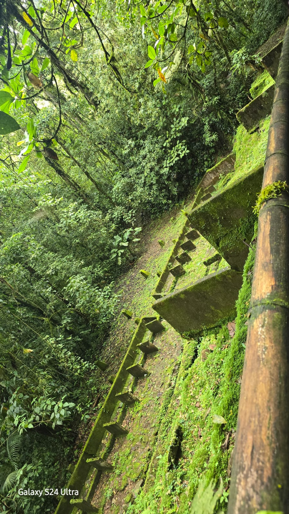
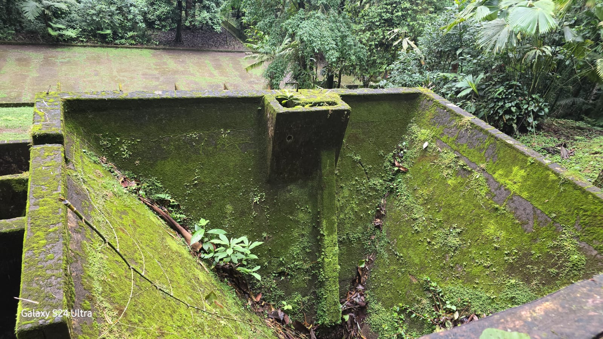
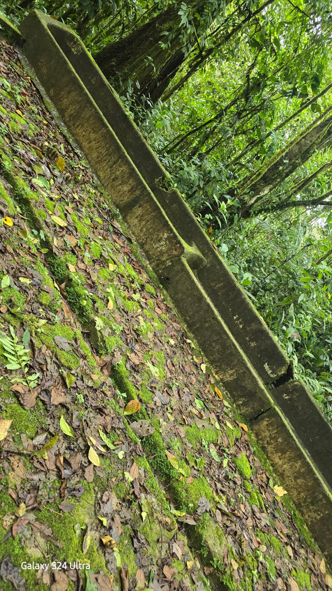
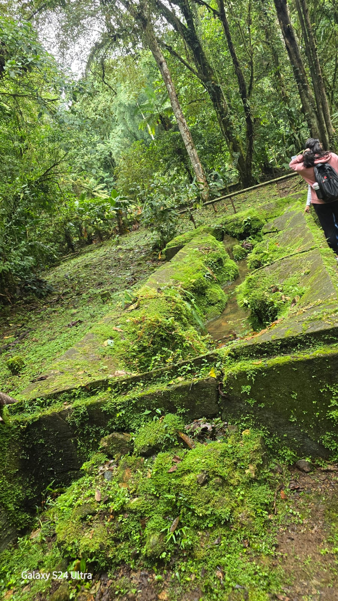
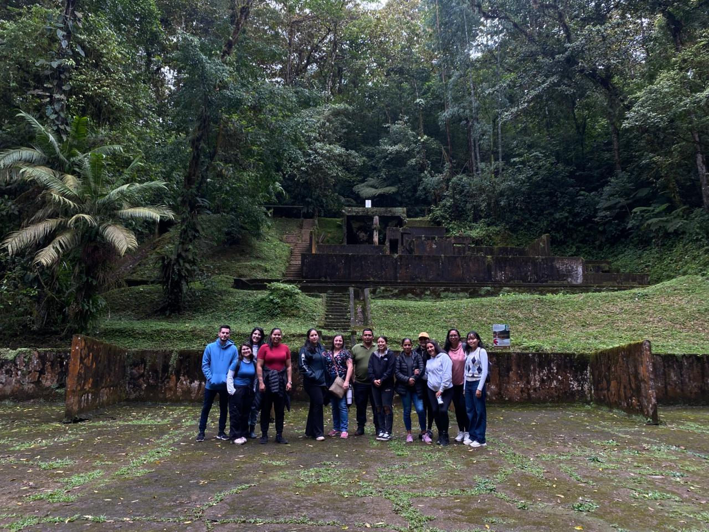

UNIVERSIDAD CASTRO CARAZO
LICENCIATURA EN CIENCIAS DE LA EDUCACIÓN CON ÉNFASIS EN DOCENCIA
VIAJE A LA MARTA
PRODUCTO CREATIVO
ESTUDIANTE:
DANIEL TIJERINO CERÓN
DANIEL TIJERINO CERÓN
CURSO:
LD5013 INTRODUCCIÓN A LA PEDAGOGÍA
LD5013 INTRODUCCIÓN A LA PEDAGOGÍA
PROFESORA:
CARMEN AMELIA ULATE QUESADA
CARMEN AMELIA ULATE QUESADA
SEDE: CENTRAL
I CUATRIMESTRE | 14 FEB 2026
VROOOOM...
PANEL 1: LA RUTA
"65 Km de curvas... mi CPU mental se está reiniciando."

Salimos de San José a las 07:00. Dejamos atrás la red de fibra óptica para conectarnos a la red de raíces.
PANEL 2: LEGACY SYSTEMS

1870-1930. Aquí hubo máquinas, ruido y vapor. Hoy solo queda el esqueleto de una industria olvidada.
CRUNCH!

"La naturaleza está sobrescribiendo el disco duro."

TEXTURAS DEL TIEMPO
RECURSO HÍDRICO

El agua aquí no sale de un tubo. Fluye viva desde Talamanca. Es el sistema de enfriamiento del planeta.
CONNECT!

LA ACTIVIDAD:
Nos unimos. No como individuos, sino como nodos. Si uno suelta la cuerda, la tensión cae. Entendimos la Eco-pedagogía: NADIE NAVEGA SOLO.
Nos unimos. No como individuos, sino como nodos. Si uno suelta la cuerda, la tensión cae. Entendimos la Eco-pedagogía: NADIE NAVEGA SOLO.
> INICIANDO PROTOCOLO DE REFLEXIÓN...
> USUARIO: DANIEL TIJERINO (DOCENTE CTP)
> STATUS: PROCESANDO DATOS...
------------------------------------------------
CONCLUSIÓN: Mis estudiantes de informática creen que la "Nube" es una computadora en Virginia. Hoy confirmé que la verdadera Nube es la que da sombra y lluvia.
La tecnología debe servir a la vida, no reemplazarla. Como docente, mi misión es actualizar el software mental de mis alumnos para que sean compatibles con el ecosistema.
------------------------------------------------
> FIN DEL REPORTE._█
> USUARIO: DANIEL TIJERINO (DOCENTE CTP)
> STATUS: PROCESANDO DATOS...
------------------------------------------------
CONCLUSIÓN: Mis estudiantes de informática creen que la "Nube" es una computadora en Virginia. Hoy confirmé que la verdadera Nube es la que da sombra y lluvia.
La tecnología debe servir a la vida, no reemplazarla. Como docente, mi misión es actualizar el software mental de mis alumnos para que sean compatibles con el ecosistema.
------------------------------------------------
> FIN DEL REPORTE._█